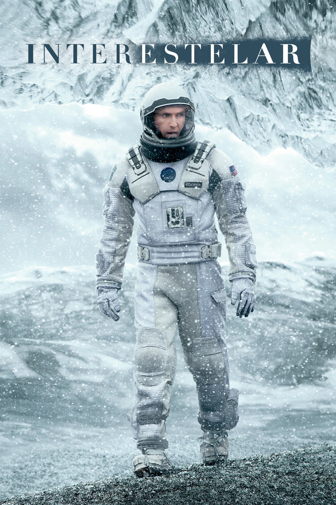
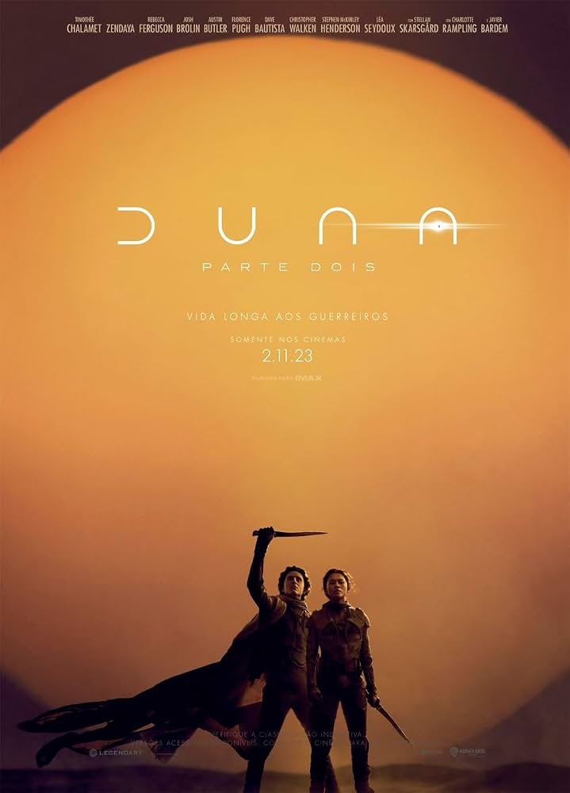
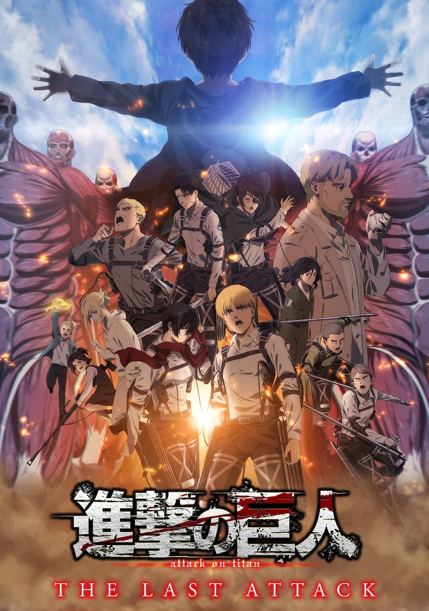

InterestelarUma expedição espacial em busca de um novo lar para a humanidade que explora os limites da relatividade, buracos de minhoca e a conexão inquebrável entre pai e filha através das dimensões do tempo.

Trilogia DunaUma ópera espacial monumental que aborda disputas políticas, destino messiânico e ecologia no planeta desértico de Arrakis, marcada por uma ambientação imersiva e visual impecável.
Questão de Tempo
Ao descobrir que os homens de sua família conseguem viajar no tempo, o protagonista aprende que o segredo de uma vida plena não é mudar o passado, mas viver cada dia comum com presença e gratidão.

Attack on TitanUma trama intensa e complexa sobre a luta pela sobrevivência e liberdade da humanidade contra gigantes misteriosos, repleta de reviravoltas morais, dilemas de guerra e sacrifício.